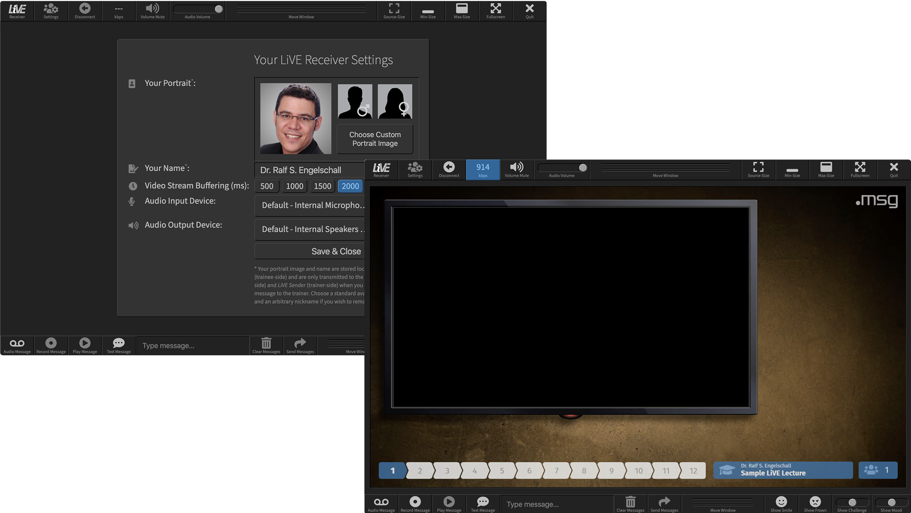

Live Video Experience (LiVE)
Live Video Experience (LiVE) is a semi-interactive up-front training broadcasting setup,
developed by Dr. Ralf S. Engelschall, and providing the following unique features:
developed by Dr. Ralf S. Engelschall, and providing the following unique features:
Full-HD Video-Streaming:
LiVE combines the trainer camera and the training content into
a single high-quality video-stream with a resolution of 1080p (1920x1080px)
and 30 frames-per-second (fps). This noticably improves the overall
training experience in contrast to standard video conferencing
solutions like ZOOM, Skype or Microsoft Teams.
Unique Up-Front Training Features:
The trainer can mix his camera and the output of multiple input devices,
and use a Head-Up-Display (HUD) to enrich the resulting video-stream. The HUD
itself provides remote controllable display widgets: agenda, progress bar, training title,
attendee counter, company logo, banners, break timers and visual closures. In addition, the HUD provides
remote controllable and input receiving widgets: text/audio based popups, boolean/numeric/textual
votings, ad-hoc emoticons and continuous feeling statistics.
Self-Hostable, Secure, Open Source:
LiVE consists of Open Source Software (OSS) components, both
on the sender, central relay service and receiver side.
The trainings are protected by access codes and all network communication happens
transport encrypted. As a result, LiVE can be fully self-hosted on premise,
or running in a private or public Cloud.
Live Video Experience (LiVE) consists of three particular components:
LiVE Sender:
This component is run at the trainer-side of a LiVE session,
sends the video-stream via RTMPS (RTMP-over-SSL/TLS) to the LiVE Relay
and receives the event-stream via MQTTS (MQTT-over-SSL/TLS) from the LiVE Relay.
It is primarily based on the Open Source software components
Open Broadcaster Software (OBS) Studio,
the Head-Up-Display Server (HUDS), and
its special Training HUD.
LiVE Relay:
This component is run at the server-side of a LiVE session
and relays the RTMPS video-stream and MQTTS event-stream betweeen the
trainer and the trainees. It is primarily based
on the Open Source software components
SRS for RTMPS and Mosquitto for MQTTS.
LiVE Receiver:
This component is run at the trainee-side of a LiVE session,
receives the RTMPS video-stream from the LiVE Relay
and sends the MQTTS event-stream to the LiVE Relay.
It is primarily based on the Open Source software components
Electron and FFmpeg.
